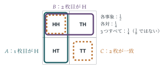

STEP III 2021、第12問
先に進む前に問題を読んでおこう。問題は、OCRが配布している2021年のSTEP問題一式（zipファイル）のSTEP IIIに収録されている： www.ocr.org.uk/Images/696588-2021-past-papers.zip
導入
プレイヤー \(1\) と \(2\) が同じ目を出したとする。このことから、プレイヤー \(2\) と \(3\) が同じ目を出すかどうかについて何かわかるだろうか。意外なことに、何もわからない。これらの事象は独立（independent）なのである。プレイヤー \(1\) と \(3\) についても同様である。ところが、\(1\) が \(2\) と一致し、\(2\) が \(3\) と一致するならば、\(1\) は必ず \(3\) と一致する。3つの事象のどの2つも独立であるのに、3つ全体としては独立ではないのである。
対ごとの独立性（pairwise independence）は完全な独立性よりも弱く、その違いは重要である。分散（variance）に関しては対ごとの独立性さえあれば十分であり、この問題はその事実を利用している。しかし、それ以外の多くの目的には十分ではない。計算機科学者は対ごとに独立な乱数を意図的に用いる。完全に独立な乱数よりもはるかに安価に生成でき、しかも多くのアルゴリズムにとってはそれで十分だからである。
取りかかる前に
\(\mathrm{P}(X_{12} = 1)\) はいくらか。\(\mathrm{P}(X_{12} = 1 \text{ かつ } X_{23} = 1)\) はいくらか。
プレイヤー \(1\) がどの目を出しても、プレイヤー \(2\) がそれと一致する確率は \(\frac16\) である。\(X_{12} = 1\) と \(X_{23} = 1\) がともに成り立つのは3人全員が同じ目を出すときであり、その確率は \(\frac{6}{216} = \frac{1}{36}\) である。
順を追って解く
段階 1 対ごとの独立性
\(\mathrm{P}(X_{12} = 1, X_{23} = 1) = \frac{1}{36} = \frac16 \cdot \frac16 = \mathrm{P}(X_{12} = 1)\mathrm{P}(X_{23} = 1)\) であり、各変数は2つの値しかとらないので、\(X_{12}\) と \(X_{23}\) は独立である（2値をとる変数では、同時分布表（joint table）の1つのマスが残りのマスをすべて決定する。演習問題 1 でこのことを正確に扱う）。\(X_{12}\) と \(X_{34}\) のように共通のプレイヤーをもたない対は明らかに独立である。したがって、すべての \(X_{ij}\) は対ごとに独立である。
段階 2 得点の平均と分散
得点は \(S = \sum_{i<j}X_{ij}\) であり、これは \(\binom n2\) 個の変数の和で、各変数の平均は \(\frac16\)、分散は \(\frac16 \cdot \frac56 = \frac{5}{36}\) である。期待値（expectation）はつねに和に分けられるので、\(\mathrm{E}(S) = \frac16\binom n2\) である。
和の分散が分散の和に等しくなるのはどのようなときか。
和の分散は、分散の和に共分散（covariance）の和の2倍を加えたものであり、独立な対の共分散は \(0\) である。したがって対ごとの独立性で十分である： \[\mathrm{E}(S) = \frac{n(n - 1)}{12}, \qquad \mathrm{Var}(S) = \frac{5}{36}\binom n2 = \frac{5n(n - 1)}{72}.\]
段階 3 分散の公式
\(Y_i\) の平均がすべて \(0\) ならば \(\mathrm{Var}(\sum Y_i) = \mathrm{E}\bigl((\sum Y_i)^2\bigr)\) であり、平方を展開すると各 \(Y_i^2\) が1回ずつ、各積 \(Y_iY_j\)（\(i < j\)）が2回ずつ現れる。期待値をとれば公式が得られる。■
段階 4 奇数・偶数のゲーム
\(\mathrm{E}(Z_{12})\) はいくらか。\(Z_{12}Z_{23}\) はどのような値をとりうるか。また、それが \(0\) でないのはどのようなときか。
\(Z_{12} = 1\) となる確率は \(\frac{3}{36} = \frac{1}{12}\)（2人とも \(2\)、2人とも \(4\)、または2人とも \(6\) を出す場合）であり、\(-1\) となる確率も \(\frac{1}{12}\) である。よって \(\mathrm{E}(Z_{12}) = 0\)、\(\mathrm{E}(Z_{12}^2) = \frac16\) である。
\(Z_{12}Z_{23} \neq 0\) となるのは3人全員が同じ目を出すときに限られ、そのとき \(Z_{12} = Z_{23}\)（ともに \(+1\) またはともに \(-1\)）であるから、積は \(1\) である。したがって \(\mathrm{E}(Z_{12}Z_{23}) = \frac{1}{36}\) であり、これは \(\mathrm{E}(Z_{12})\mathrm{E}(Z_{23}) = 0\) と等しくない。よってこれらは独立ではない。■
（さらに直接的には、\(\mathrm{P}(Z_{12} = 1, Z_{23} = -1) = 0\) であるのに対し、各事象の確率は単独ではそれぞれ \(\frac{1}{12}\) である。）
段階 5 分散
総得点 \(T = \sum Z_{ij}\) の平均は \(0\) である。小問 (ii) により、\(\mathrm{Var}(T)\) は \(\binom n2 \cdot \frac16\) に、対の対すべてにわたる \(\mathrm{E}(Z_{ij}Z_{kl})\) の和の2倍を加えたものである。共通のプレイヤーをもたない対の対の寄与は \(0\) である（それらは独立で、それぞれ平均が \(0\) だからである）。ちょうど1人のプレイヤーを共有する対の対はそれぞれ \(\frac{1}{36}\) の寄与をもち、その個数は \(n\binom{n-1}{2}\) である（共有するプレイヤーを選び、次に他の2人を選ぶ）。したがって \[\begin{aligned} \mathrm{Var}(T) &= \frac{n(n - 1)}{12} + 2 \cdot \frac{1}{36} \cdot \frac{n(n - 1)(n - 2)}{2} \\ &= \frac{n(n - 1)}{36}\bigl(3 + (n - 2)\bigr) = \frac{n(n^2 - 1)}{36}. \qed \end{aligned}\]

振り返り
指示変数。 得点を指示変数（indicator variable）の和として書くことで、すべてがプレイヤーの対の問題に帰着した。
分散に必要なのは対だけ。 和の分散は対ごとの共分散だけで決まるので、分散を足し合わせるには対ごとの独立性で十分である。
独立性は仮定せず確かめよ。 見た目の似た2つのゲームが、異なる依存構造をもっていた。
背後にある数学
複数の事象の独立性
事象 \(A_1, \ldots, A_n\) が独立であるとは、そのどの部分集まりについても、共通部分の確率が各確率の積に等しいことをいう。3つの事象の場合、これは4つの条件を意味する。対についての3つの条件と、\(\mathrm{P}(A \cap B \cap C) = \mathrm{P}(A)\mathrm{P}(B)\mathrm{P}(C)\) である。セルゲイ・ベルンシュタイン（Sergei Bernstein）は1920年代に図 12.4.1 の例を示し、対についての条件から3つについての条件は導かれないことを示した（逆に、3つについての条件だけからも対についての条件は導かれない）。問題における一致の事象 \(X_{12}\)、\(X_{23}\)、\(X_{13}\) は、ベルンシュタインの硬貨とまったく同じ構造をしている。
無相関は独立ではない
共分散が \(0\)、すなわち \(\mathrm{E}(XY) = \mathrm{E}(X)\mathrm{E}(Y)\) であること（無相関（uncorrelated））は、独立性よりさらに弱い。STEP III 2000 Q14（演習問題にある）は、2つの値しかとらない変数では2つの概念が一致するが、3つの値をとる場合には一致しないことを示している。簡単な例を挙げよう。\(X\) を \(\{-1, 0, 1\}\) 上の一様分布（uniform distribution）に従う変数とし、\(Y = X^2\) とする。すると \(\mathrm{E}(XY) = \mathrm{E}(X^3) = 0 = \mathrm{E}(X)\mathrm{E}(Y)\) であるが、\(Y\) は \(X\) によって完全に決まる。共分散が測るのは線形な関連だけなのである。
乱数を生成することは、計算機にとって高くつく作業である。1979年、Larry Carter と Mark Wegman は、データを擬似乱数的な位置に格納するハッシュ法（hashing）をはじめとする多くのアルゴリズムでは、対ごとに独立なランダムな選択でも完全に独立なものと同じくらいうまくいくことを示した。対ごとに独立な値は非常に安価に生成できる。たとえば、\(a\) と \(b\) をランダムに選んで \(k = 0, 1, \ldots, p - 1\) に対して \(a + bk \pmod p\) をつくると、どの2つも独立な \(p\) 個の値が得られる。これがうまくいく理由は、この問題の分散の計算にある。チェビシェフ（Chebyshev）の不等式に必要なのは分散だけであり、分散に必要なのは対だけなのである。
思考のスキル
ある個数の平均と分散を求めるには、数えられうる対象それぞれに1つずつ指示変数を対応させ、その和として個数を書け。平均には個々の指示変数が、分散には指示変数の対が必要である。
これは確率論で最も有用な手法の一つであり、すでに 第 9.8 節 にも登場している。大学では、ランダムグラフ（random graph）、アルゴリズム、統計的検定の解析を支える手法となる。
次の一歩
2つの値。 STEP III 2000、第14問 に挑戦せよ。この問題は、それぞれ2つの値しかとらない確率変数では \(\mathrm{E}(XY) = \mathrm{E}(X)\mathrm{E}(Y)\) から独立性が従うことを示し、3つの値をとる場合の反例（counterexample）を求めるものである。
より大きなチーム。 小問 (i) で \(n = 7\) のとき、得点の平均と標準偏差（standard deviation）を求め、例として挙げられた得点 \(7\) と比較せよ。
再び誕生日。 指示変数を用いて、\(k\) 人の中で誕生日が一致する対の個数の平均と分散を求めよ（第 9.9 節）。それらの指示変数は対ごとに独立か。
3つについては成り立つが対ごとには成り立たない。 確率がいずれも \(\frac12\) で、\(\mathrm{P}(A \cap B \cap C) = \frac18\) を満たすが、対ごとに独立ではない3つの事象を見つけよ。
さらに学ぶために
Geoffrey Grimmett & David Stirzaker, Probability and Random Processes（Oxford University Press）。独立性を扱った最初のいくつかの章。
Michael Mitzenmacher & Eli Upfal, Probability and Computing（Cambridge University Press）。対ごとの独立性とそのアルゴリズムへの応用。
Joseph Blitzstein & Jessica Hwang, Introduction to Probability（CRC Press、オンラインで無料公開）。指示変数と共分散について。